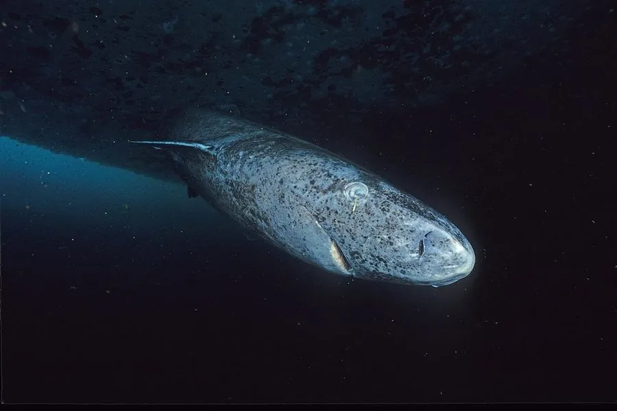

鱼类 · 动物界
格陵兰鲨 Somniosus microcephalus

北极与北大西洋深水的长寿鲨鱼，体色灰褐、行动迟缓，眼球常被寄生虫附着而近乎失明，寿命可达四百年，是已知最长寿的脊椎动物。
- 分类
- 门脊索动物门纲软骨鱼纲目角鲨目科睡鲨科属睡鲨属
- 栖息环境
- 北极与北大西洋的冷水海域，从近岸浅海到 2000 米深水
- 地理分布
- 北大西洋、北冰洋，从加拿大北极、格陵兰、冰岛至挪威与俄罗斯北部
- 保护级别
- IUCN 易危（VU）
物种志
格陵兰鲨体形粗壮呈圆柱状，成年体长 3–5 米，最大可超过 6 米，体重 400–1000 千克，雌性大于雄性。体色灰褐至深褐，常带紫褐色斑驳与小白色斑点，皮肤粗糙如砂纸；吻部短钝，眼极小，背鳍与臀鳍都很小且位置靠后，尾鳍不对称。它的肌肉组织含三甲胺氧化物，使肉质带有毒性并产生类似尿味的气味。
它们分布于北极与北大西洋的冷水海域，从浅海到 2000 米深都有记录，偏好接近冰点的水温。行动极为缓慢，游速常不足每小时 1.5 千米，靠伏击与捡食腐肉捕食鱼类、海豹甚至驯鹿尸体。眼睛常被桡足类寄生虫附着，角膜受损，多数个体近乎失明，主要依靠嗅觉与侧线感知。生长极慢，约 150 岁才性成熟，寿命可达 400 年。因生长与繁殖极慢，种群一旦受损极难恢复。
形态与习性
- 体长约 3–5 m，最大可超过 6 m
- 体重约 400–1000 kg
- 食性鱼类、海豹、腐肉，甚至驯鹿尸体
- 寿命可达 400 年，约 150 岁才性成熟
- 视觉眼球常被桡足类寄生虫附着，多数个体近乎失明
- 游速通常不足 1.5 km/h，是已知最慢的鲨鱼之一
- 肉质含三甲胺氧化物，未经处理食用会中毒
趣味知识
- 格陵兰鲨能活四百年，是已知寿命最长的脊椎动物。
- 它眼睛里常挂着桡足类寄生虫，角膜被啃出伤痕，多数个体几乎看不见。
- 它的肉含毒素，必须经过长时间发酵风干才能食用。